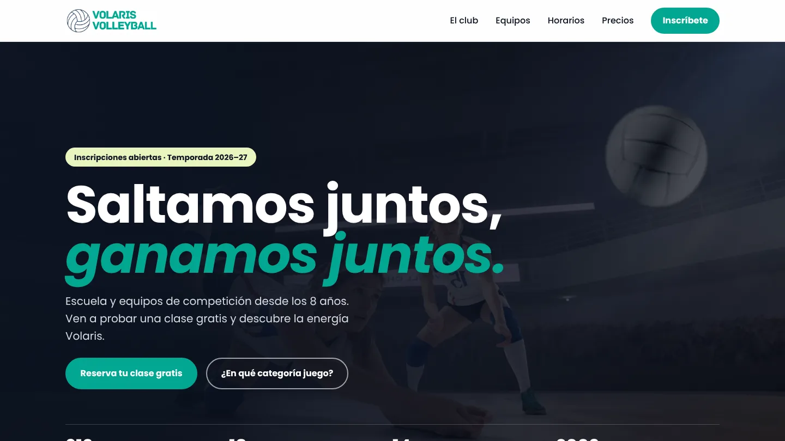
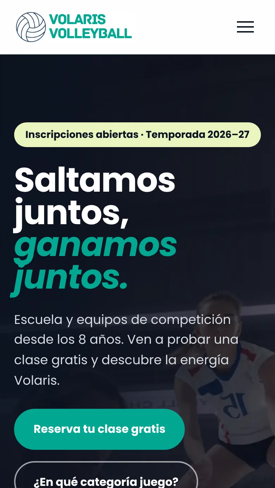
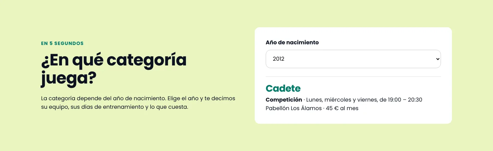
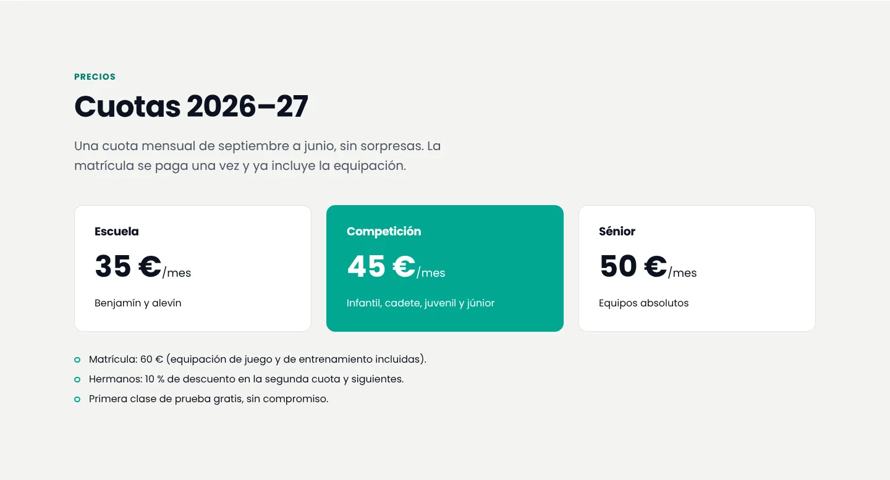

Proyecto personal
Volaris Volleyball, la web que un club necesita
La web de un club de voleibol inventado, pensada a partir de lo que de verdad preguntan las familias: en qué equipo juega mi hijo, cuándo entrena, cuánto cuesta y cómo se apunta.
- Punto de partida
- Las familias preguntan siempre lo mismo: en qué equipo juega, cuándo entrena y cuánto cuesta.
- Resultado
- Una web que responde esas preguntas antes de que nadie las haga, con un buscador de categoría por año de nacimiento.


De dónde sale
Fui entrenadora de voleibol durante cuatro temporadas, y cada septiembre las familias hacían las mismas preguntas por WhatsApp: en qué categoría entra, qué días entrena, dónde y cuánto cuesta. La respuesta casi nunca estaba clara en la web del club.
Así que me inventé un club, Volaris, y diseñé la web que me habría gustado tener: la que responde esas preguntas antes de que nadie tenga que hacerlas. El club y sus datos son ficticios.
Una sección por pregunta
- ¿En qué categoría juega? Un buscador: eliges el año de nacimiento y te dice el equipo, los días, la sede y el precio.
- ¿Cuándo y dónde? Una tabla de horarios por categoría y las dos sedes con su dirección.
- ¿Cuánto cuesta? Tres cuotas mensuales, la matrícula con la equipación incluida y el descuento para hermanos.
- ¿Cómo me apunto? Tres pasos y unas preguntas frecuentes.

Los logros, que en muchas webs de clubes acaban escondidos en un párrafo, tienen su propia franja, y el botón de inscripción está siempre en el menú.
Un solo sitio para los datos
Las siete categorías están en una sola lista en JavaScript. De ella salen el buscador, las tarjetas de los equipos y la tabla de horarios, así que para cambiar un horario solo hay que tocarlo en un sitio:
const categorias = [
{ nombre: "Infantil", desde: 2013, hasta: 2014, tipo: "Competición",
dias: "Lunes, miércoles y viernes", hora: "17:30 – 19:00", precio: 45 },
// ...
];
const categoria = categorias.find((c) => year >= c.desde && year <= c.hasta);
Detalles técnicos
- Animaciones al hacer scroll solo con CSS (scroll-driven animations), dentro de
@supportspara que la web se vea igual en navegadores que no las soportan. - Preguntas frecuentes con
<details>: se abren sin JavaScript y funcionan con teclado. - El resultado del buscador se anuncia a los lectores de pantalla con
aria-live, y el menú móvil indica si está abierto conaria-expanded. - Fotos en WebP: de 9 MB a 75 KB entre las dos.
- Sin librerías: HTML, CSS y JavaScript.